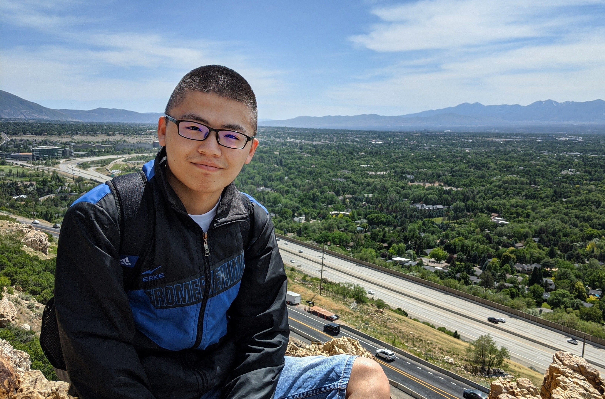

Jian Liu (刘剑).
Email: liujian@math.utah.edu
About me
I am a fourth year PhD candidate in Mathematics at the University of Science and Technology of China
(September 2016-- ). Now I am a visiting scholar at the
University of Utah (August 2019-- ). My advisors are Prof.
Xiao-Wu Chen
and Prof. Srikanth Iyengar. My research interests are derived categories, commutative algebras and representation theory of finite dimensional algebras.
Publications
1. "Duality and symmetry of complexity over complete intersections via exterior homology" with
Josh Pollitz, to appear in Proceedings of the AMS.
arXiv version
2. "Singular equivalences induced by bimodules and quadratic monomial algebras" with
Xiao-Wu Chen and
Ren Wang.
arXiv version
Teaching
September 2018--January 2019
"Linear Algebra A2", Teaching Assistant,
lecture: Prof. Xiao-Wu Chen.
Febuary 2018--June 2018
"Linear Algebra A1", Teaching Assistant,
lecture: Prof. Xiao-Wu Chen.
September 2017--January 2018
"Elements of Algebra", Teaching Assistant,
lecture: Prof. Xiao-Wu Chen.
Febuary 2017--June 2017
"Complex Analysis", Teaching Assistant, lecture: Prof. Luo Luo.
Talks (Graduate Student seminar)
June 20 2020
Classifying thick subcategories of the stable category of maximal Cohen-Macaulay modules over a hypersurface.
References:
Takahashi 2010
February 20 2020
Support varieties and cohomology over complete intersections.
References:
Avramov-Buchweitz 2000
November 12 2019
Local cohomology modules-various definitions.
March 2019
Koszul duality patterns in representation theory.
January 2018
The singularity category over Gorenstein rings.